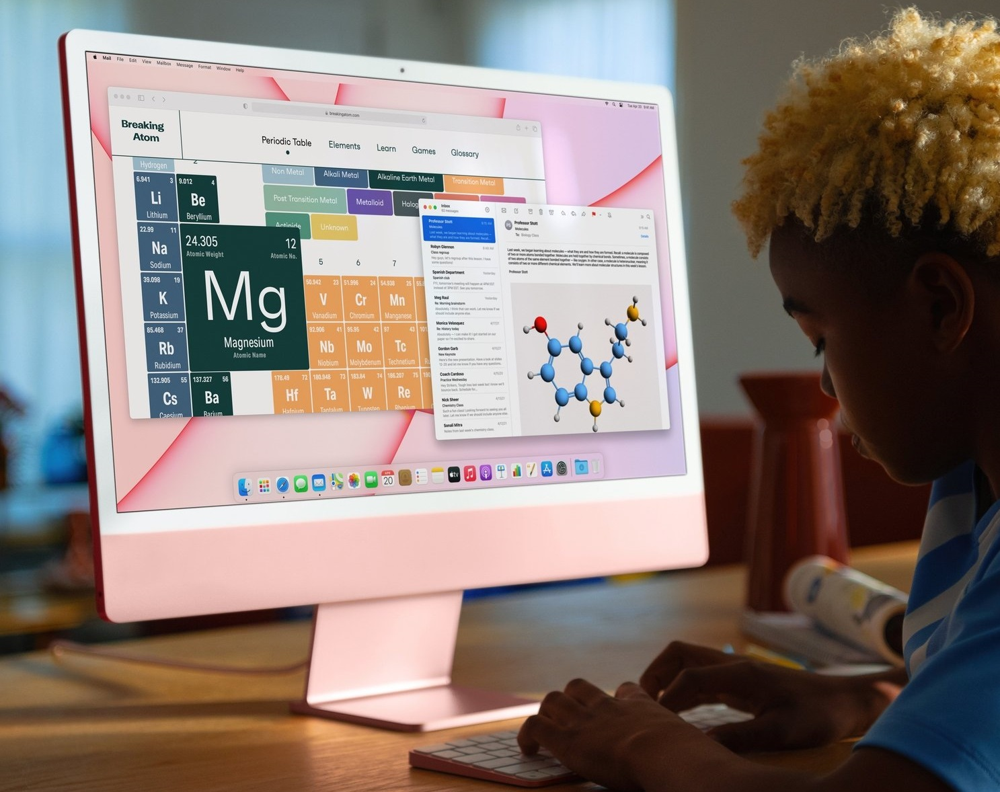
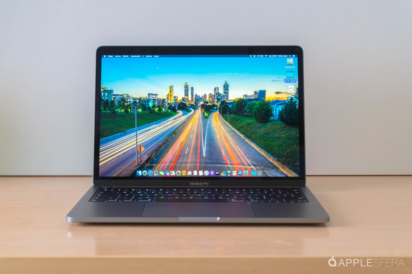
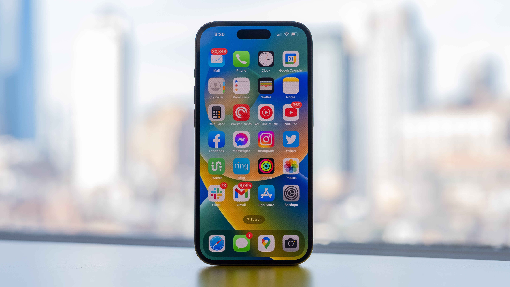
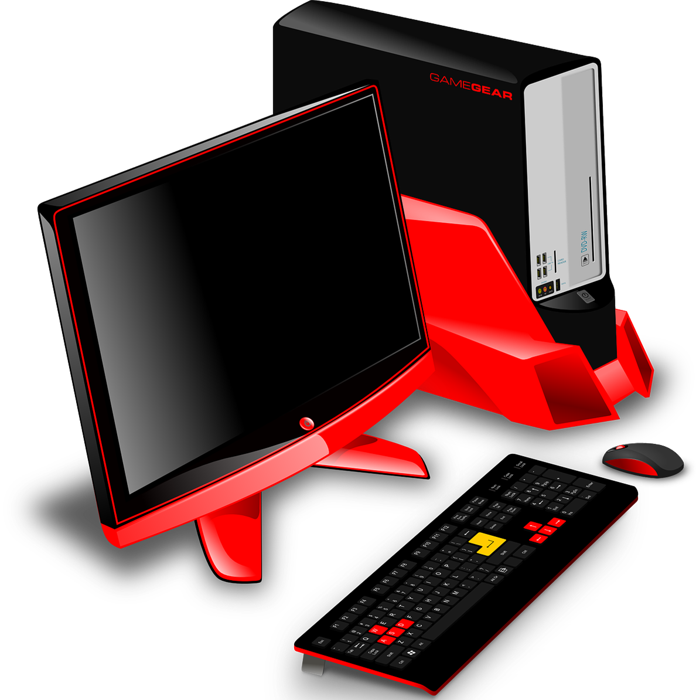

Настільні комп'ютери
комп'ютери, які потребують постійного підключення до живлення, зазвичай розташовуються на столі і не переносяться під час роботи.
До них відносяться:- десктопи — складається із окремого системного блоку, до якого підключаються монітор, клавіатура, миша та інші пристрої
- неттопи — системний блок компактного розміру прикріпляється до монітору, менш потужний;
- моноблоки — вид комп'ютера, у якому системний блок та монітор виглядають як єдине ціле.
Портативні комп'ютери
комп'ютери, у яких є батарея, що дозволяє певний час працювати пристрою без підключення до електромережі. Вони менші за розміром і вагою, тому їх можна легко переносити із собою
До них відносяться:- ноутбуки — це комп'ютер, у корпусі якого поєднуються стандартні комплектуючі портативного комп'ютера (дисплей, клавіатура, тачпад, батарея). Вони можуть виконувати всі функції настільного комп'ютера.
- нетбуки — пристрій, який схожий на ноутбук, тільки менший за розміром та низькою продуктивністю, тому використовується для виконання обмеженого набору завдань
- планшети — портативні комп'ютери із сенсорним екраном


Кишенькові комп'ютери
це вид портативних комп'ютерів, які відрізняються маленьким розміром та потужною батареєю, що дозволяє переносити та використовувати пристрій тривалий час. Засіб введення у таких пристроях або сенсорний екран, або висувна клавіатура.
До них відносяться:- комунікатори — це мобільний телефон, який доповнений деякими функціями комп'ютера
- кишенькові персональні комп'ютери (КПК) — це мініатюрний персональний комп'ютер з клавіатурою або без неї
- смартфони — це компактний персональний комп'ютер, який доповнений функціями мобільного телефону
Окрім цього, в залежності від функцій, які персональні комп'ютери можуть виконувати, вони поділяються на такі види
- Офісний комп'ютерперш за все призначений для опрацювання та зберігання текстових та числових даних.
- Домашній комп’ютербільш потужний ніж офісний, використовуються не тільки для розв’язування задач, а й для роботи в Інтернеті, відтворення відеофільмів та аудіо файлів, зберігання та перегляду фотографій.
- Ігрові комп’ютери потужні серед персональних комп'ютерів, використовуються для комп’ютерних ігор. Вони можуть мати додаткові ігрові пристрої введення та виведення даних: джойстик, руль і педалі для комп’ютерних перегонів, а також швидкий та потужний процесор, великий обсяг оперативної пам'яті, додаткові відеоадаптер та звукову карту
